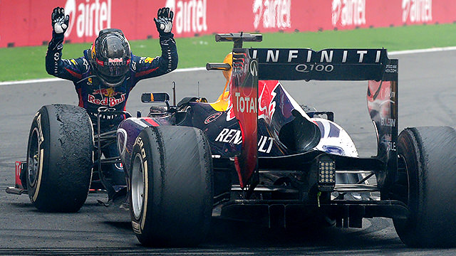
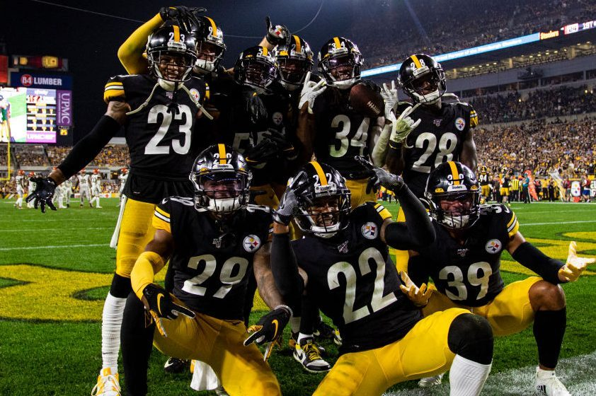
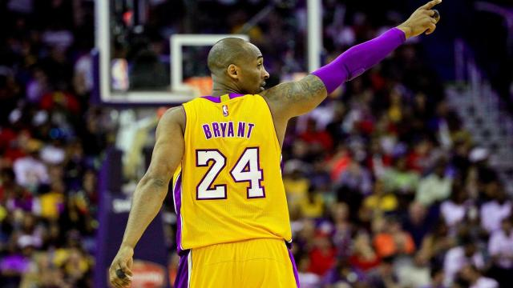

Szabó Pál - Portfólió
Kezdőlap
Rólam
Hobbi/érdeklőd�és
Elérhetőségek
Ezen az oldalon többségében az érdeklődési köreimet mutatom be.
Kézilabda:
Mint ugye előző oldalon is szó esett róla a kézilabda az eddigi életem nagy részét képezte, de sajnos mostmár ez csak hobbi maradt számomra a tanulás miatt.
Ez nem jelent mást, mint hétvégenkénti meccsezgetések, baráti sörözgetések, bográcsozásokat stb.
Forma-1:
A
Formula–1 sokak által csak száguldó cirkuszként ismert őrület, napjaink
egyik vezető
technikai sportja, és Magyarorszogon talán a legnézettebb autósport. Ez
a sport mindig is a szívem csücske marad, de gondolom ez a legtöbb
gépész kollegénál így is van. Az a mérnöki precizitás, kifinomultság,
amit a csapatok, pilóták napról-napra, hétről-hétre hoznak, amellett
szerintem senki sem mehet el csak úgy, hogy még csak szempillantást sem
vet rá. Tudom, az hogy az embernek ki a kedvenc pilótája, csapata
legtöbbször megosztja az embereket, de én továbbra is büszkén
kijelenthetem, hogy karrierje kezdete óta Sebastian Vettel fanatikus
vagyok. Még ha ez az utóbbi pár év nem is az ő meneteleiről volt híres, én azt gondolom még mindig a legnagyobbak közé tartozik. Képen
is látható, hogy a Ferrari iránti elkötelezettségem egyáltalán nem
ilyen mély, mivel nem képviselem azt a világnézetet, ami olyan
bajnokokat tört meg, mint Alonso vagy Vettel. Leginkább a Red Bull
technikája és a csapat megfelelő döntesei hoznak lázba. Ezért is mennék
vissza abba a 2009-2014-ig tartó korszakba, amig Sebastian a Red Bull
pilótája volt. Adódik a kérdés, hogy Vettel csak azért volt világbajnok
mert egy világverő kocsi volt alatta, ami teljes mértékben badarság.
Ami azt illeti a mostani Mercedes dominanciája sokkal nagyobb, ezt
jópár statisztika bizonyítja is.
Amerikai sportok:
NFL:
Az
NFL-t már régóta követem, legfőképpen a baráti társaságom miatt. Anno
mikor oda kerültem a kézilabdás körökbe senkitől nem álltak messze a
fizikai kontaktot igénylő sportok, és ilyen az amerikai foci is.
Kedvenc csapatom a Pittsburgh Steelers, bár bevallom most eléggé
hadilábon állunk erősségben. Sajnos az utóbbi években több sztárjátékos
is elhagyott bennünket vagy éppen csak balhéra vágyott, amit a
vezetőség nem engedhetett meg. Tavalyi év több szempontból is érdekes
volt számunkra. Kiderült, hogy nincsenek jó csere irányítóink, de ezzel
szemben viszont van egy nagyon jól összeszedett védelmünk. Alig várom
már, hogy a szezon elkezdődhessen és Big Ben is visszatérjen. Idén
nagyobb céljaink biztosan nem lesznek, de ahogyan ez ebben a sportágban
szokott lenni még bármit hozhat a jövő szezon is.
NBA:
Az NBA
nem túl sok fizikai kontaktot igénylő sportág, de annál látványosabb
is. Persze erről a rendesen gondoskodnak is a rengetek mérkőzéssel,
all-star gálával, slam dunk contest-el és még sorolhatnám. Itt nem
tudok kiemelni kedvenc csapatot, inkább csak csapatokat, mint például a
Boston Celtics, Brooklyn Nets, Los Angeles Lakers. Ebből a
felsorolásból kettő hatalmas múltú csapat, a harmadik csapatot pedig
csak szimplán azért kedvelem, mert ott játszik a kedvenc játékosom. Ez
a 2020-as év megviseli a sportágat, ugyanis már a playoff mérkőzeseknek
kéne régen zajlania. Ne feledkezzünk meg persze a hatalmas veszteségről
se, ami év elején érte a sportágat, egy legenda, Kobe Bryant távozott
az élők sorából. Egy szörnyű baleset követelte az ő, a lánya és lánya
csapattársai és hozzátartozóik életet. Szóval borzasztó év a szurkolók,
csapatok, játékosok szempontjából is. Természetesen
izgatottan várom a következő szezont még, ha a tanulás nem is engedi
meg, hogy megnézhessem az összes mérkőzést.
Zene:
Old-School:
Az old school rap/hip-hop hihetetlen életformát, gondolkodást képviselt. Fontos volt a lyrical szövegek képviselete. A mindennap történő real dolgokról szóltak és a megélhetésért küzdöttek ezek az előadók még ezekben az időkben, emellett az életforma mellett. Azon korok legnagyobbjai közé tartozott Tupac, Biggie, Wu-Tang Clan és még sorolhatnám. Úgy gondolom ezen előadók, csapatokra még a mai fiatal rapperek is felnéznek.
New-School:
A new school rap eléggé megosztó dolog lett mostanában a régi korok kedvelői miatt. Én személy szerint nem tudok párhuzamot vonni a kettő között, de mégis mindkettőt szeretem. Sajnos a legtöbb szám megbotránkozató, mert semmi jelentéssel nem bír csak a drogokról, pénzről szól. Természetesen ezen számok nem feltétlen lehetnek rosszak, mivel általában egy nagyon jól összehozott beattel egy hatalmas slágert tudnak összehozni. Mai számok kevésbé lyricalok, mint a régiek, de van egy-két előadó, aki tökéletesen át tudta hozni a régi vonalból a jó szövegeket. Ilyen például Kendrick Lamar, J.Cole vagy Joyner Lucas. Természetesen vannak a feltörekvő rapperek közül is tehetségesek, akiknek nem feltétlen kell autotune, hogy hangjukkal megfogják a hallgatókat. Itt tudom említeni Roddy Ricchet, Dababyt vagy az általam nagyon kedvelt és talán még lyrical rapperek közé is sorolható Meek Mill (Wins&Losses albuma). Természetesen, mint minden ez is a megélhetésről szól, tehát nem feltétlen kell utálni őket ha olyan szövegeket dobnak a piacra, ami nem bír jelentéssel, csak éppen fülbemászó dallama van, ez sajnos a kereslet-kínálat problémája.
Természetesen más zenei stílusokat is szívesen meghallgatok, most csak azokat írtam le, amik közelebb állnak ahhoz, amiket kedvelek. Egyértelműen jó gépész módjára imádom a Retro magyar számokat is.
Zene:
Old-School:
Az old school rap/hip-hop hihetetlen életformát, gondolkodást képviselt. Fontos volt a lyrical szövegek képviselete. A mindennap történő real dolgokról szóltak és a megélhetésért küzdöttek ezek az előadók még ezekben az időkben, emellett az életforma mellett. Azon korok legnagyobbjai közé tartozott Tupac, Biggie, Wu-Tang Clan és még sorolhatnám. Úgy gondolom ezen előadók, csapatokra még a mai fiatal rapperek is felnéznek.
New-School:
A new school rap eléggé megosztó dolog lett mostanában a régi korok kedvelői miatt. Én személy szerint nem tudok párhuzamot vonni a kettő között, de mégis mindkettőt szeretem. Sajnos a legtöbb szám megbotránkozató, mert semmi jelentéssel nem bír csak a drogokról, pénzről szól. Természetesen ezen számok nem feltétlen lehetnek rosszak, mivel általában egy nagyon jól összehozott beattel egy hatalmas slágert tudnak összehozni. Mai számok kevésbé lyricalok, mint a régiek, de van egy-két előadó, aki tökéletesen át tudta hozni a régi vonalból a jó szövegeket. Ilyen például Kendrick Lamar, J.Cole vagy Joyner Lucas. Természetesen vannak a feltörekvő rapperek közül is tehetségesek, akiknek nem feltétlen kell autotune, hogy hangjukkal megfogják a hallgatókat. Itt tudom említeni Roddy Ricchet, Dababyt vagy az általam nagyon kedvelt és talán még lyrical rapperek közé is sorolható Meek Mill (Wins&Losses albuma). Természetesen, mint minden ez is a megélhetésről szól, tehát nem feltétlen kell utálni őket ha olyan szövegeket dobnak a piacra, ami nem bír jelentéssel, csak éppen fülbemászó dallama van, ez sajnos a kereslet-kínálat problémája.
Természetesen más zenei stílusokat is szívesen meghallgatok, most csak azokat írtam le, amik közelebb állnak ahhoz, amiket kedvelek. Egyértelműen jó gépész módjára imádom a Retro magyar számokat is.